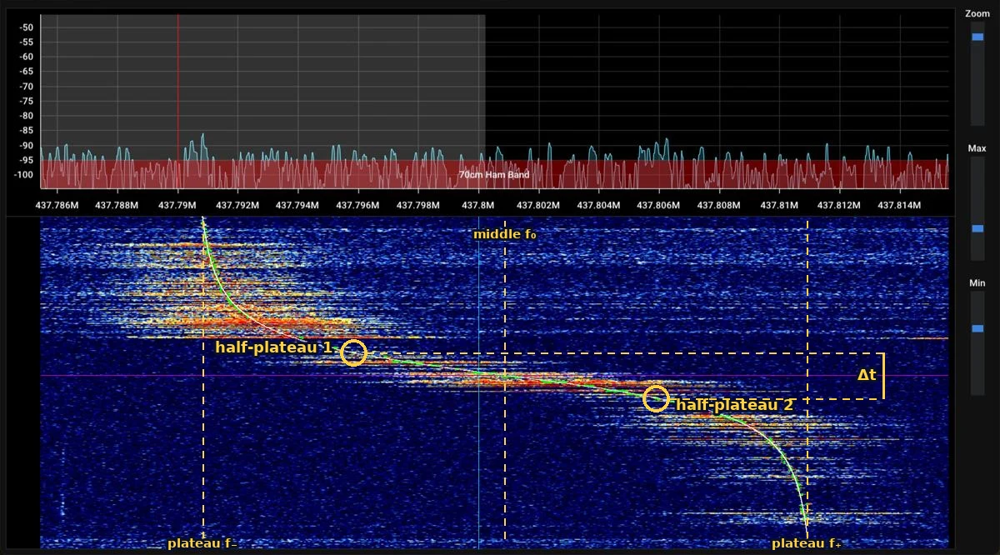

Doppler Simulator and Calculator
A transmitter passes an observer. The observer records only the received frequency. From that one curve the page solves the speed and the closest distance four ways, and tests whether the path was straight. Set the distance yourself, or hide it and let the curve find it.
Doppler curve fit
A hidden transmitter passes a receiver. Does it pass in a straight line or along a curve? The recording answers that too: see part 11 of the paper (the straight-path test) and the Path setting in the full simulator below. Its signal shows as the bright S in the spectrogram. Move the four sliders until the red curve sits on the bright line. The sliders then give the transmitter's frequency, its speed, the closest distance and the time of closest approach. The same curve holds for any moving source: sound, radio or light. Only the wave speed c changes. The dashed plateau lines give v, and the circled half-plateau points give d. Random passes use sound, c = 343 m/s, and can be straight or curved. The real ISS recordings use radio, c = 299,792,458 m/s.
A real one

Satellite S-curves and their half-plateau points
Radio at 437.550 MHz, c = 299,792,458 m/s. The plot shows the shift f − f₀ in kHz. Pick a pass: its S is drawn in blue, the others in grey, and its half-plateau points are circled. A closer pass gives a sharper S and a shorter Δt. The Transit speed is worked out here as 2π(R + h)/T from the 1,100 km altitude and 107 minute period in Black (1981), with R = 6,371 km.
Real passes: the ISS on 3 October 2026
Each SatNOGS station recorded the same ISS pass over Europe during the ARISS SSTV event. Dots are the station's measured shift. The blue line is the straight-pass fit (method D) from the ISS tab of The Shape of Distance, with its half-plateau points circled.
Data: SatNOGS Network (Libre Space Foundation), ARISS SSTV event, 2 to 6 October 2026, 437.550 MHz. Black, H. D. (1981). Satellites for Earth surveying and ocean navigating. Johns Hopkins APL Technical Digest, 2(1), 3–13.
Full simulator and calculator
Radio and sound sources, hidden distances, curved paths, your own recordings, and all four solving methods.
1. Source
2. Mover
3. Distance
4. Recording
Or analyse your own recording
Received frequency
Solved from the curve
Integrating the curve: straight or curved?
The area under the curve is the change in distance, formula (9). A straight path puts every point on (d + Δr)² = d² + V²τ², formula (10). The lower chart is how far the integrated distance misses that straight-path line.
Top view
Calculator
Readings to speed and distance
Speed and distance to the curve
How the sim works: the equations, step by step
This section explains every equation the sim uses, from the beginning. You only need algebra and Pythagoras. The equation numbers match the labels in the sim's results table.
1. Words you need
- Wave
- A repeating disturbance that travels: sound in air, or a radio signal.
- Frequency
- How many waves pass a point each second. The unit is the hertz (Hz): 1 Hz is one wave per second. 1 kHz = 1,000 Hz, 1 MHz = 1,000,000 Hz, 1 GHz = 1,000,000,000 Hz.
- Source
- The thing that sends the waves: a train horn, a radio on a satellite.
- Observer
- The person or receiver that records the waves. In this sim the observer does not move.
- Doppler effect
- When the source comes closer, each new wave has a shorter trip than the one before, so the waves arrive closer together: the observer measures a higher frequency. When the source moves away, the waves arrive further apart: a lower frequency. The change is the Doppler shift.
- Closest approach
- The moment the source is nearest to the observer. The source is then moving neither toward nor away from the observer, so there is no shift.
- S-curve
- The graph of received frequency against time for a passing source: high and flat at first, a drop through the middle, low and flat at the end.
- Plateau
- A flat part of the S-curve, far before or far after closest approach.
2. Variables
| Symbol | Meaning | Unit |
|---|---|---|
| \(f_0\) | frequency the source sends | Hz |
| \(f\) | frequency the observer receives | Hz |
| \(f - f_0\) | Doppler shift | Hz |
| \(c\) | speed of the wave: 299,792,458 m/s for radio, about 343 m/s for sound in air | m/s |
| \(V\) | speed of the source along its path | m/s |
| \(d\) | closest distance between source and observer | m |
| \(\tau\) | time since closest approach (negative before it), counted when the wave leaves the source | s |
| \(t\) | time on the observer's clock, when the wave arrives | s |
| \(r\) | distance from observer to source | m |
| \(\dot r\) | range rate: how fast \(r\) changes. Negative when the source comes closer, positive when it moves away | m/s |
| \(\theta\) | angle between the source's path and the line from observer to source | degrees |
| \(f_+,\ f_-\) | the high plateau (coming closer) and the low plateau (moving away) | Hz |
| \(\Delta t\) | width of the S: the time between the two half-plateau points | s |
| \(\Delta r\) | change in distance since closest approach, \(r - d\) | m |
3. The distance during a straight pass
The source moves in a straight line at steady speed \(V\). At closest approach it is a distance \(d\) from the observer. After a time \(\tau\) it has moved \(V\tau\) along the path. The observer, the closest point and the source make a right triangle, so Pythagoras gives the distance:
$$ r = \sqrt{d^2 + (V\tau)^2} \tag{1} $$How \(d\) is found. Nobody measures \(d\) with a tape. It is an unknown, and the S-curve gives it. The reason is that \(d\) sets how sharp the S is. A source that passes close swings from high to low in a few seconds. A source that passes far away swings slowly. The steps are:
- Read \(V\) from the plateaus (part 6). The distance is not needed for this.
- Find the two moments when the frequency is halfway between the middle and a plateau. At those moments \(\dot r = \pm V/2\). Part 4 shows \(\dot r = V\cos\theta\), so \(\cos\theta = 1/2\) and \(\theta = 60^\circ\). In the triangle above, the source is then \(d/\sqrt{3}\) along the path on each side of the closest point (\(\tan 60^\circ = \sqrt{3}\)).
- The time between those two moments is the width \(\Delta t\). The source covers \(2d/\sqrt{3}\) in that time, so \(V\Delta t = 2d/\sqrt{3}\) and \(d = \Delta t \cdot V \cdot \sqrt{3}/2\). This is equation (5) in part 7.
The sim also gets \(d\) in three other ways and compares them: from the slope at the middle (part 8), by adding up the curve (parts 10 and 11), and from the full fit (part 12). Part 13 works one example through with numbers: a width of 83.68 s at 7,589 m/s gives \(d \approx 550\) km.
4. How fast the distance changes
Only the part of the source's speed that points along the line to the observer changes the distance. That part is \(V\cos\theta\), with a minus sign while the source comes closer. In the triangle, \(\cos\theta = V\tau / r\), so
$$ \dot r = V \cdot \frac{V\tau}{r} = \frac{V^2\,\tau}{\sqrt{d^2 + V^2\tau^2}} \tag{2} $$Check it: before closest approach \(\tau\) is negative, so \(\dot r\) is negative (coming closer). At \(\tau = 0\), \(\dot r = 0\). Long after, \(V\tau\) is much bigger than \(d\), so \(r \approx V\tau\) and \(\dot r \approx V\).
5. The Doppler formula
For a source moving through still air, with the observer at rest, the received frequency is
$$ f = \frac{f_0}{1 + \dot r / c} \tag{3} $$If the source comes closer (\(\dot r\) negative), the bottom is less than 1 and \(f\) is higher than \(f_0\). If it moves away, \(f\) is lower. When \(V\) is very small compared with \(c\), as for every satellite and aircraft, this is almost exactly
$$ f - f_0 \approx -\frac{f_0}{c}\,\dot r = -\frac{f_0}{c}\cdot\frac{V^2\,\tau}{\sqrt{d^2 + V^2\tau^2}} $$This is the S-curve. It has four unknowns: \(f_0\), \(V\), \(d\), and the time of closest approach. The sim uses (3) itself, not the short form, for radio and sound alike. For the ISS the difference from the full radio formula of relativity is about \(V^2/2c^2 = 3.3\times10^{-10}\) of \(f_0\) (worked out here), which is 0.14 Hz at 437.55 MHz.
6. Reading the speed from the plateaus
Far before closest approach the source comes almost straight at the observer: \(\dot r = -V\). Far after, it goes almost straight away: \(\dot r = +V\). Put these into (3):
$$ f_+ = \frac{f_0}{1 - V/c}, \qquad f_- = \frac{f_0}{1 + V/c} $$Turn both upside down: \(\dfrac{1}{f_+} = \dfrac{1 - V/c}{f_0}\) and \(\dfrac{1}{f_-} = \dfrac{1 + V/c}{f_0}\). Adding the two lines removes \(V\) and gives \(f_0\). Subtracting them gives \(V\). The result (worked out here):
$$ V = c\,\frac{f_+ - f_-}{f_+ + f_-}, \qquad f_0 = \frac{2 f_+ f_-}{f_+ + f_-} \tag{4} $$The distance \(d\) is not in (4). The height of the S gives the speed and nothing else.
7. Reading the distance from the width
Halfway between the middle and a plateau, \(\dot r = V/2\). Put that into (2) and solve for \(\tau\):
$$ \frac{V^2\tau}{\sqrt{d^2 + V^2\tau^2}} = \frac{V}{2} \;\Rightarrow\; 2V\tau = \sqrt{d^2 + V^2\tau^2} \;\Rightarrow\; 4V^2\tau^2 = d^2 + V^2\tau^2 \;\Rightarrow\; \tau = \frac{d}{\sqrt3\,V} $$The two half-plateau points are this far before and after the middle, so the width is \(\Delta t = 2d/(\sqrt3\,V)\). Solve for \(d\) (worked out here):
$$ d = \Delta t \cdot V \cdot \frac{\sqrt3}{2} \tag{5} $$A close pass makes a sharp S. A far pass makes a wide S.
8. Reading the distance from the slope
Near the middle, \(V\tau\) is small compared with \(d\), so \(r \approx d\) and (2) becomes a straight line through zero:
$$ \dot r \approx \frac{V^2}{d}\,\tau \qquad\text{slope } = \frac{V^2}{d} \;\Rightarrow\; d = \frac{V^2}{\text{slope}} \tag{6} $$On the frequency graph the slope is \(-\dfrac{f_0}{c}\cdot\dfrac{V^2}{d}\) hertz per second. The slope alone mixes speed and distance. With \(V\) from (4), it gives \(d\).
9. Turning each recorded frequency into a range rate
Rearrange (3) to get \(\dot r\) from each measured \(f\):
$$ \dot r = c\left(\frac{f_0}{f} - 1\right) \tag{7} $$One more detail. A wave sent at time \(\tau\) arrives at \(t = \tau + r/c\). So the observer's clock and the sender's clock run at slightly different rates while the distance changes: \(\Delta t = \Delta\tau\,(1 + \dot r/c)\). With (3) this is (worked out here)
$$ \Delta\tau = \frac{f}{f_0}\,\Delta t \tag{8} $$For radio this correction is tiny. For sound from a fast train it matters.
10. Adding up the curve: integration
If the distance changes at \(\dot r\) metres per second for a short time \(\Delta\tau\), it changes by \(\dot r\,\Delta\tau\) metres. Add up these small pieces from closest approach to any later moment. That sum is the area under the \(\dot r\) graph, and it is the change in distance:
$$ \Delta r(\tau) = r(\tau) - d = \sum \dot r\,\Delta\tau \;\;\to\;\; \int_0^{\tau} \dot r\,d\tau' \tag{9} $$The sim adds the pieces with the trapezoid rule: the average of two neighbouring \(\dot r\) values times the time step. This gives the whole distance profile from the frequencies alone, except for one unknown starting value, \(d\).
11. Straight or curved? The straight-path test
For a straight path, (1) says \(r^2 = d^2 + V^2\tau^2\). Write \(r = d + \Delta r\) and multiply out:
$$ (d + \Delta r)^2 = d^2 + V^2\tau^2 \;\Rightarrow\; d^2 + 2d\,\Delta r + \Delta r^2 = d^2 + V^2\tau^2 $$ $$ \Delta r^2 = V^2\,\tau^2 - 2d\,\Delta r \tag{10} $$Every recorded point gives one \(\tau\) and one \(\Delta r\). Equation (10) has only two unknowns, \(V^2\) and \(d\), and both enter in a simple linear way. A best fit (least squares, section 12) through all the points gives both at once.
If the path really is straight, every point sits on that fit, apart from noise. If the path bends, the points cannot all fit, and the "miss" chart shows a pattern. The size of the miss measures the bend. The integration gives distance only, not direction: a source circling the observer at a fixed distance keeps \(\dot r = 0\) and makes no S at all.
12. The full fit: least squares
Method D tries values of \(V\), \(d\), the time of closest approach and, if it is not known, \(f_0\). For each try it draws the curve from (1) to (3), takes the difference from every recorded point, squares it, and adds up the squares. It keeps the values that make this total smallest. The sim does the search with the Levenberg–Marquardt method, which adjusts all values together until the total stops getting smaller.
The leftover scatter (the residual) is then compared with the noise in the recording. If the path is straight, the residual is the noise. This page counts the pass as straight when the residual is below \(\text{noise} \times \left(1 + 4/\sqrt{2n}\right)\), where \(n\) is the number of samples: a margin that gets smaller as the recording gets longer.
13. A worked example
A satellite sends at \(f_0 = 12\) GHz and passes at \(V = 7{,}589\) m/s, closest distance \(d = 550{,}000\) m (the calculator's default values).
$$ \text{plateau height } \approx \frac{f_0 V}{c} = \frac{12\times10^{9} \times 7589}{299{,}792{,}458} = 303{,}770\ \text{Hz} $$ $$ \Delta t = \frac{2d}{\sqrt3\,V} = \frac{2 \times 550{,}000}{1.7321 \times 7589} = 83.68\ \text{s} $$Now go backwards, as the observer would, using only those two readings:
$$ V = \frac{c \times 303{,}770}{12\times10^{9}} = 7{,}589\ \text{m/s}, \qquad d = 83.68 \times 7589 \times 0.8660 = 549{,}960\ \text{m} $$The small difference from 550,000 m comes from rounding the width to two decimals.
Reference
Doppler, C. (1842). Über das farbige Licht der Doppelsterne und einiger anderer Gestirne des Himmels. Abhandlungen der Königlichen Böhmischen Gesellschaft der Wissenschaften, 5. Folge, 2, 465–482.
Worked problems
Part 1 solves three textbook Doppler problems. None of them needs the distance to the source or the position of the listener. Part 2 shows what a full raw recording gives in addition: the position of the station that made it. That is the reason raw recordings from stations are not published here.
Part 1. Speed from frequency only
Problem 1. A train horn
A train passes a person standing beside the track. While the train comes closer, the person hears the horn at 470 Hz. After it passes, they hear 410 Hz. The speed of sound is 343 m/s. How fast is the train, and what frequency does the horn send?
Step 1. Write down the two plateau equations for a moving source of sound:
$$f_+ = \frac{f_0\,c}{c - V} \qquad f_- = \frac{f_0\,c}{c + V}$$Step 2. Equation (4) of the paper solves them for \(V\) and \(f_0\):
$$V = c\,\frac{f_+ - f_-}{f_+ + f_-} = 343 \times \frac{470 - 410}{470 + 410} = 343 \times \frac{60}{880} = 23.39\ \text{m/s}$$ $$f_0 = \frac{2 f_+ f_-}{f_+ + f_-} = \frac{2 \times 470 \times 410}{880} = 437.95\ \text{Hz}$$What was not used: the distance from the track, where the person stands, or where the train is. Two frequencies and the speed of sound are enough.
Problem 2. An ambulance coming closer
An ambulance siren sends 700 Hz. A person ahead of it hears 750 Hz while it comes straight toward them. The speed of sound is 343 m/s. How fast is the ambulance?
Step 1. Start from the approach equation and solve it for \(V\):
$$f_+ = \frac{f_0\,c}{c - V} \;\Rightarrow\; c - V = \frac{f_0\,c}{f_+} \;\Rightarrow\; V = c\left(1 - \frac{f_0}{f_+}\right)$$Step 2. Put in the numbers:
$$V = 343 \times \left(1 - \frac{700}{750}\right) = 343 \times \frac{50}{750} = 22.87\ \text{m/s}$$What was not used: distance and position. When the sent frequency is known, one frequency is enough.
Problem 3. A satellite radio signal
A station tunes to a satellite that sends 437.550 MHz. Early in the pass the signal is flat at 437,561,180 Hz. Late in the pass it is flat at 437,538,820 Hz. Radio waves travel at \(c = 299{,}792{,}458\) m/s. How fast is the satellite?
Step 1. The difference and the sum of the two plateaus:
$$f_+ - f_- = 22{,}360\ \text{Hz} \qquad f_+ + f_- = 875{,}100{,}000\ \text{Hz}$$Step 2. Equation (4):
$$V = 299{,}792{,}458 \times \frac{22{,}360}{875{,}100{,}000} = 7{,}660\ \text{m/s}$$What was not used: distance and position again. The speed comes from the height of the S only (part 6 of the paper).
Part 2. Why a raw recording gives away the station
The problems above use only the plateaus. A full raw recording has much more: the clock time of every sample. From that, the paper's method gives two more numbers for each pass (parts 7 to 12):
- \(t_0\)
- the clock time when the source was nearest to the station
- \(d\)
- how near it came
The path of a satellite is public. Anyone can look up where it was at every second. Combine that with \(t_0\) and \(d\), and the station can be found. Only three facts are used: the path, the clock, and the speed of the wave.
Step 1. One pass puts the station on a flat sheet
At closest approach the source moves neither toward the station nor away from it. So the line from the source to the station is square (at 90°) to the path. All the points that are square to the path at that moment form a flat sheet that cuts across the path. The station is on that sheet. Call the source's position at that moment \(S\). With \(\hat{u}\) the direction of the path:
$$(O - S)\cdot\hat{u} = 0 \tag{11}$$Here \(O\) is the station's position and \(\cdot\) is the dot product. The dot product is zero when two directions are square to each other.
Step 2. A second pass on a different path gives a line
A second pass gives a second sheet. Two flat sheets that are not parallel meet in a straight line. The station is on that line. For two level passes the line stands straight up, so the station's map position \((X, Y)\) is now known. It comes from the two times \(t_0\) only:
$$\hat{u}_1\cdot(X, Y) = \hat{u}_1\cdot S_1 \qquad \hat{u}_2\cdot(X, Y) = \hat{u}_2\cdot S_2 \tag{12}$$These are two straight-line equations with two unknowns, solved as in school algebra.
Step 3. The closest distance gives the height
Let \(\rho\) be the flat distance from the line to \(S\), and \(h\) the height of the path. Pythagoras with the closest distance \(d\) gives the station's height \(Z\):
$$d^2 = \rho^2 + (h - Z)^2 \;\Rightarrow\; Z = h - \sqrt{d^2 - \rho^2} \tag{13}$$The other root, \(h + \sqrt{d^2 - \rho^2}\), is above the satellite and is not a place where a station can be. A third pass, or more passes, repeats the check and makes the answer sharper.
No shape of the Earth goes into steps 1 to 3. They use the path, square corners and Pythagoras only. The same idea located ships from satellite Doppler in the Transit system (Guier & Weiffenbach, 1960).
Try it: find the hidden station
The demo hides a station on a 300 km × 300 km map. A source at 420 km height passes twice on two known level paths, at 7,660 m/s, sending 437.550 MHz, with 30 Hz of noise. Each recording goes through the same least-squares fit as the sim (method D). Then steps 1 to 3 find the station.
Reference
Guier, W. H., & Weiffenbach, G. C. (1960). A satellite Doppler navigation system. Proceedings of the IRE, 48(4), 507–516.